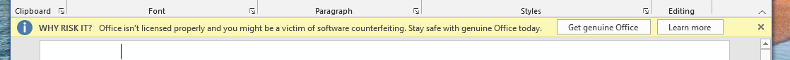

If you are seeing this banner on Office apps, the below solution can resolve it.
reg delete "HKLM\SOFTWARE\Microsoft\Windows NT\CurrentVersion\SoftwareProtectionPlatform\0ff1ce15-a989-479d-af46-f275c6370663" /f
reg add "HKLM\SOFTWARE\Microsoft\Windows NT\CurrentVersion\SoftwareProtectionPlatform" /f /v KeyManagementServiceName /t REG_SZ /d "0.0.0.0"
reg add "HKLM\SOFTWARE\Microsoft\Windows NT\CurrentVersion\SoftwareProtectionPlatform" /f /v KeyManagementServiceName /t REG_SZ /d "0.0.0.0" /reg:32
It will work on every update channel/product of Office C2R Volume 2016/2019/2021/O365 (Mondo 2016)
Thanks to dialmak for the solution. 🤗
P.S.
Updated on 14-Jul-2021